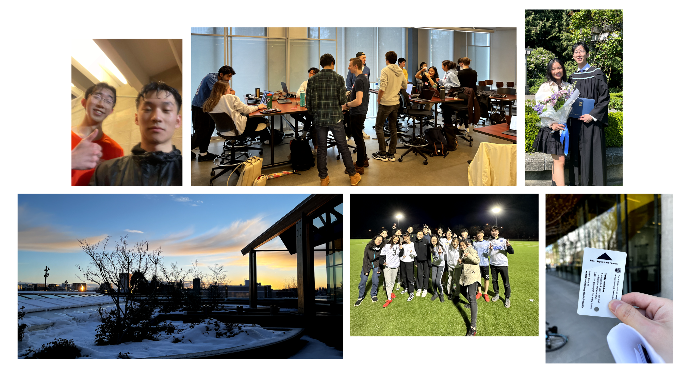
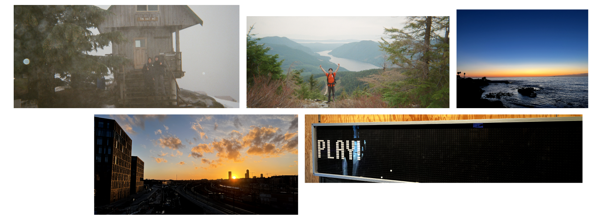
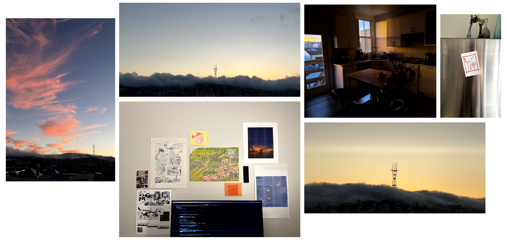

tw: abuse. This reflection serves as a sort of public journal entry. It talks about a lot of sensitive topics. If you choose to read, please do so with care and tenderness and treat it as if I shared it in confidence with you.
Hey there 2023 me,
I’ve been struggling to write this letter for the past week and now that I am sitting at the airport waiting to go home, the emotions finally feel right to get it out of my system. I don’t think it’s going to be in any sort of structured format like it has been in previous years but alas, I write this for me and you only.

To start, the first half of 2023 was better than anything I could have asked for by pretty much all accounts.
Despite this being my final term of my four years at UBC, I lived it more fully and presently than any other term I had prior. Though school itself was a very minor part of my time, the revolving cast made Vancouver a hard place to say goodbye to.
You’ll find this is a common theme but good company makes otherwise unbearably difficult things quite awesome, actually.
This is particularly funny because I know one of the big things you were really nervous about last year was whether you’d still be able to find joy and community despite all of your close friends graduating. I definitely remember having cried a few times about having felt incredibly lonely around last December but yet you held on to a deep-seated belief that there had to be incredibly good people around you who were also looking for that kind of community.
In January, you decide to take a leap of faith and started Saturdays@UBC with V. It started off very small — a weekend gathering of five or so folks regularly talking about what fun thing they learned every week and how their side projects are going. The motley crew grew to be a small group of friends and it quickly became something to look forward to at the end of each week.
On a whim, I decided to run a 10km at the Sun Run with the knowledge that race day coincided with my birthday. I made a bet with B that I would have a target time of 55 minutes — the bet being that if I didn’t complete the run in that time, I would get pied in the face. In retrospect, this was honestly very fun to train for. I got to really test the limits of my own body and felt myself get stronger with each run. The actual day of the Sun Run itself was rainy which was kind of ironic and I just barely missed my target time. By all accounts, the actual events of my birthday by themselves weren’t anything to be excited about but living it alongside some of my favourite people means that this is disproportionately the memory I come back to most when I think about the good things that happened this year.
A few trips here and there:
- Disneyland, Scandinavia, and San Diego;
- a backpacking trip along the Sunshine Coast Trail with S where we did nothing but hike and read for a week;
- a lovely month in Waterloo (where the water is in fact loo but the people are not); and finally,
- across the stage for graduation.
Shortly, I moved to San Francisco to start working full-time. Work was obsessive but not life-consuming — the right kind to feel fulfilled and exhausted after work but still leaves you looking forward to going climbing or playing guitar after work.
All things considered, life was really really good.

Fallen Down (Reprise) - Toby Fox
The end of July marked another visit from relatives. This time, it wasn’t purely just barking and yelling and screaming and cursing but also mismatched love, awkward expressions of care, and attempts to understand.
This — to me — was much more difficult to stomach than pure abuse. Unadulterated abuse means that you can consistently shut yourself out to any and all things they say. There is some relief in the helplessness of it all, the pretense of them being the abuser and you the victim.
It isn’t as straightforward when there are glimpses of normality and okayness that peek through occasionally. Desperately, we cling to these moments of grace (cut fruit here and there, asking how you are feeling, saying they are sorry) and wonder what could have been.
It’s painful because these moments of normality give you a basis on which an overthinking brain can rationalize the rest of their otherwise unacceptable behaviour from.
They say things like ‘all of your friends are just there to take advantage of you and don’t truly care about you’. They take everything out of your fridge, slamming it on the table, ready to throw it the moment you say something they don’t like the sound of. They scream, curse, and disown you in ways that no parent should ever act toward their children.
Yet, some part of you finds it convincing and thinks it’s okay because deep down, there is some twisted way to rationalize what they are doing as looking out for you. They tell you they say these things because they are the only ones who love you enough to tell you these cursed truths in your life that no one else has the bravery to. They raised you in fire because they wanted you to be strong.
“Now you are, after all, at bottom a kindly and softhearted person (what follows will not be in contradiction to this, I am speaking only of the impression you made on the child), but not every child has the endurance and fearlessness to go on searching until it comes to the kindliness that lies beneath the surface. You can only treat a child in the way you yourself are constituted, with vigor, noise, and hot temper, and in this case this seemed to you, into the bargain, extremely suitable, because you wanted to bring me up to be a strong brave boy.”
Link to original
What I never understood was how you never felt remorse or regret for the things you said or did beyond a cursory ‘sorry’ tossed my way as an act of pity.
In fact, there were many times that you chose not to follow through on whatever promised punishment you had devised and considered it as a generous pardon. But the act and the uncertainty again chipped at me more. The way your face got red with fury, spittle flying, you could have convinced me that I was to be hanged.
Again, borrowing words from Franz Kafka:
If he really is hanged, then he is dead and it is all over. But if he has to go through all the preliminaries to being hanged and he learns of his reprieve only when the noose is dangling before his face, he may suffer from it all his life. Besides, from the many occasions on which I had, according to your clearly expressed opinion, deserved a whipping but was let off at the last moment by your grace, I again accumulated only a huge sense of guilt.
This uncertainty was an eternal sword of Damocles hanging over my head, never allowing me to enjoy the moments of normalcy and calm between fits of anger — truly an unfairness for all parties.
Each time I asked them to reconsider how they parent, they blew up and accused me of a crucial lack of respect. Of course, I as the child was never able to talk back. They were the ones to set the rules as the head of the household and I was to never challenge it. A child is subordinate to the parent and any violation of this order is fit for punishment.
“Hence the world was for me divided into three parts: one in which I, the slave, lived under laws that had been invented only for me and which I could, I did not know why, never completely comply with; then a second world, which was infinitely remote from mine, in which you lived, concerned with government, with the issuing of orders and with the annoyance about their not being obeyed; and finally a third world where everybody else lived happily and free from orders and from having to obey”
Link to original
The passive parent also plays the role of the accomplice in the form of emotional betrayal. The act of passively standing by implicitly condones the behaviour, further cementing their worldview as correct. A shrug as if to say “this is just the way things work”. To them, their world was completely inconsistent and I was the one gone mad.
On every side, I was in the wrong and I was in your debt. Right and wrong seem to constantly trade places depending on who the doer is.
The consequence of this is that it leaves your internal compass of ‘right’ and ‘wrong’ in disarray every time. Each conflict I walk away feeling less sure about what I want and how I feel.
Sometimes in a bout of normalcy, you ask me why I appear to treat you so coldly. “Do you treat all your friends like this too? No wonder they don’t like you.”
You are probably right in this regard and thank goodness I don’t. There is a coldness there but it comes from a place of self-preservation. It’s because I don’t know when to protect myself; the times I open myself up most to your love are the times I am hurt the most by the successive pain you inflict.
What to do?
Like the way a gecko detaches its tail when caught, I leave a part of myself behind when I pull away emotionally. I’ve been able to compartmentalize it very well but every time I go home I see that tail I left behind and I wonder what it could have been.
Attempts at repair require a certain vulnerability that is always taken advantage of. How many times must one burn their hand to learn to not touch the fire? Time and time again, after each successive failure, I pull my hand back wincing in pain in the hopes that for once it will be different.
After all, the most devastating aspect of relationships such as this is that you, as the victim, are made to feel as if you are the aggressor and that you should be the one to apologize and provide recourse over and over and over and over again.
Each time, the eternal question is one of repair. Do I try to mend it again?
The trajectory of the year was so good until family stuff and I think I had a lot of sadness about how much headspace that took up from then on. I watched myself get more antsy and nervous in the weeks following. I had (and still have) a harder time focusing on work, projects, friends, and my relationship — things I care about deeply.
At this point, I’m not sure how much of it to chalk up to moving to a new country, starting a new job, or the trauma itself though it probably all compounds in some way.
I know that having a healthy relationship with being obsessive about your work requires a baseline level of psychological safety. I know that as a result of events in July, that baseline safety had been compromised.
I leaned into work as a major distractor, frequently pulling multiple late nights and at times neglecting my own physical and emotional health. I told myself that I knew if I put enough time, this was something I could excel at and if I excelled at it I could finally feel good about myself again. Work became my life and I had a hard time setting boundaries between it and the rest of my life. This became a vicious cycle and as various parts of my life fell into states of disrepair, I felt like everything in my life was going wrong.
I write this still feeling similarly about the general trajectory of my life. There are always days of normalcy here and there, but I miss how my life was in the first half of the year.
I’ve sat with this feeling of not-quite-okayness-but-generally-functional for a few months now but too much of it was waiting around for things to calm down or for myself to ‘feel okay again.’

Lately, I’ve been asking myself how I want to actually spend my time in the coming new year.
Part of what made the first half of the year consistently so good was that I had enough of a baseline skeletal structure in my week to provide some self-stabilizing feedback. As of now, my weeks pretty much consist of work and sleep (meals aren’t even predictable anymore).
I think I actually really do like my hobbies which are more solitary. Pottery, climbing, running, and playing guitar consistently bring me a lot of joy when I actually do them. Pottery specifically has a certain comfort to it. It makes me feel like I have a very specific form of agency over a material thing.
In keeping with this, here’s a rough list of things I want to do regularly:
- Make 50 pounds of ceramics. Throw 40 cups, 20 bowls, and 20 plates.
- Run a half marathon. Go to the gym each Monday, Wednesday, Friday, starting each workout with a run. Make friends to run with!
- Play guitar every day for at least 30 minutes. Record a demo video a week to track progress. Try and find a small group to jam/make a band with?
- Host some sort of regular co-working/co-writing/co-learning sessions on Sundays in the city. M, R, and S are all interested in this and I really think it could be a backbone in my schedule I look forward to every week.
I have no broader goals outside of these. I think flourishing will stem from having a solid psychological foundation and that’s really all I’m hoping for in the next year.
Kindly,
Your present self